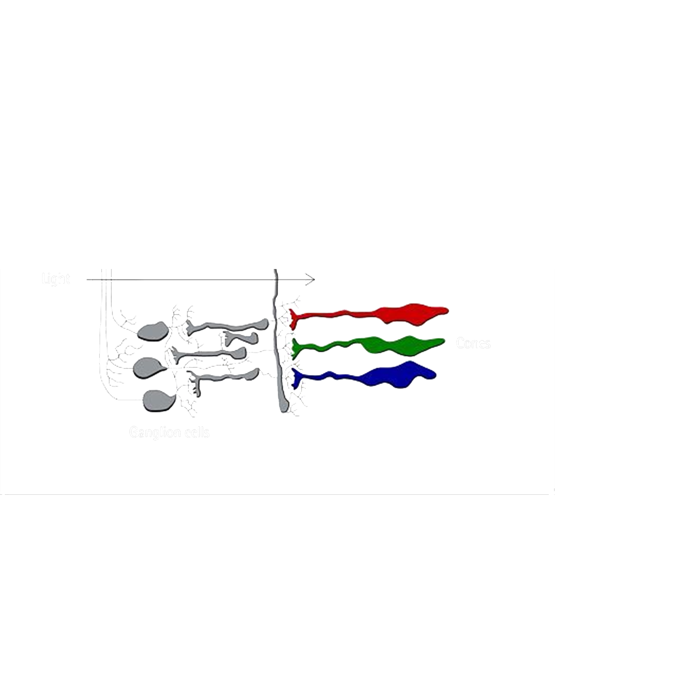

Lo spazio LMS

Lo spazio LMS, è lo spazio di partenza utilizzato per le simulazioni percettive, rappresenta quindi il punto di partenza per ottenere fedeltà fisica. Questo spazio rappresenta quella che è la risposta dei coni umani, Long Medium Short, rispetto a uno stimolo e pesato in base alle funzioni di sentività.